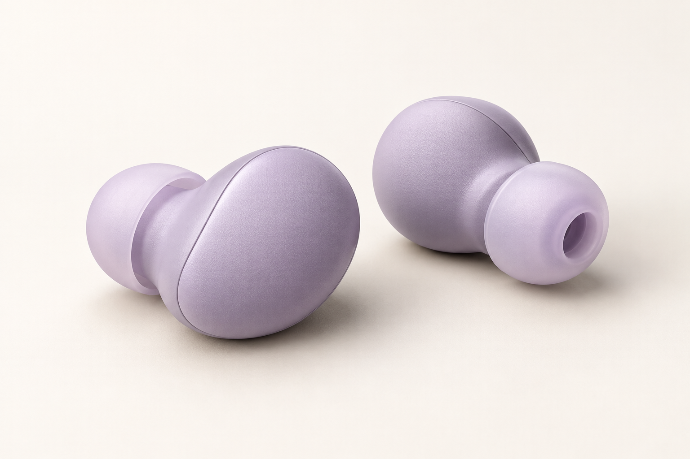

SLEEPBUDS
SLEEPBUDSComfort is personal
We show the shape, tip options, and side-sleep considerations so you can judge whether a model is worth trying.
We focus on the details shoppers often need to uncover for themselves: what a sleepbud does, how it feels, and what the seller actually offers.

A useful product page helps you assess a fit for your own life. These are the questions our team uses to organize the information.
We show the shape, tip options, and side-sleep considerations so you can judge whether a model is worth trying.
Noise reduction, sound masking, and audio playback are different jobs. We describe the selected model accurately.
Price, delivery, returns, and buyer experiences should be visible and traceable to the real seller.
The best choice depends on what keeps you awake. Use this as a starting point, then check the specifications of the exact model you plan to buy.
| What to compare | Disposable foam plugs | Sleepbuds | Regular audio earbuds |
|---|---|---|---|
| Main purpose | Passive sound reduction | Varies: passive reduction or sleep audio, depending on model | General listening and calls |
| Side-sleep profile | Depends on fit and insertion | Check the model's shape and tip options | Varies by earbud design |
| Charging | Not required | Required only for electronic models | Usually required |
| Ongoing care | Replace as directed | Check cleaning and tip replacement instructions | Check manufacturer guidance |
| Use beyond sleep | Possible when reduction is needed | Depends on the model and setting | Common for music, calls, and travel |
This compares product categories, not laboratory performance or specific brands. Details must be checked against the selected listing.
A shared bedroom, a busy home, and side-sleep discomfort lead to different buying questions. We map the problem before the product.
The page should explain fit, materials, features, limitations, and care in ordinary language. A headline specification alone is not enough.
We make room for product detail, authentic buyer feedback, and seller policies before sending you to a marketplace listing.
Sleepbuds are intended for particular sound or comfort needs. If sound is not what interrupts your sleep, a sound-focused product may not address the cause. Assess the product's actual capabilities before purchase.